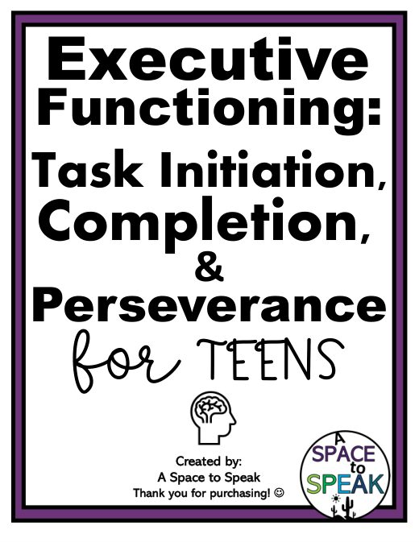
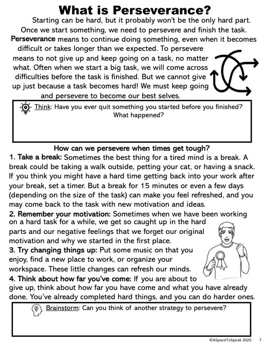
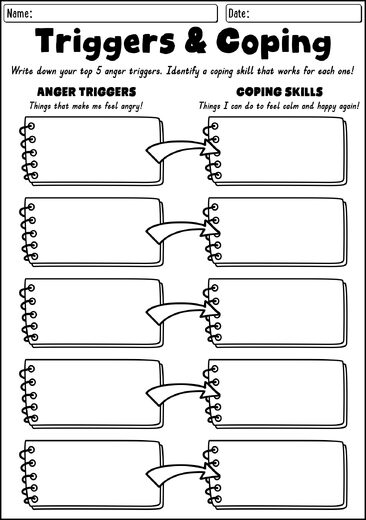

Grace Dittman
Block 2 Math
Block 3 Math
ESS
Lesson Plans
Résumé
Photos
Search
Home
›
ESS
›
weeks 6+7
›
Activities
Activities
Lesson Plans →

Executive Functioning for Teens (packet)
2 - Executive Functioning_ Task Initiation and Perseverance for Teens.pdf
Getting-to-Know-You Jenga Questions
jenga.docx

What Is Perseverance?
PerserverenceWKST.pdf

Triggers & Coping
triggers-and-coping-skills-worksheets_67842.png
Lesson Plans →